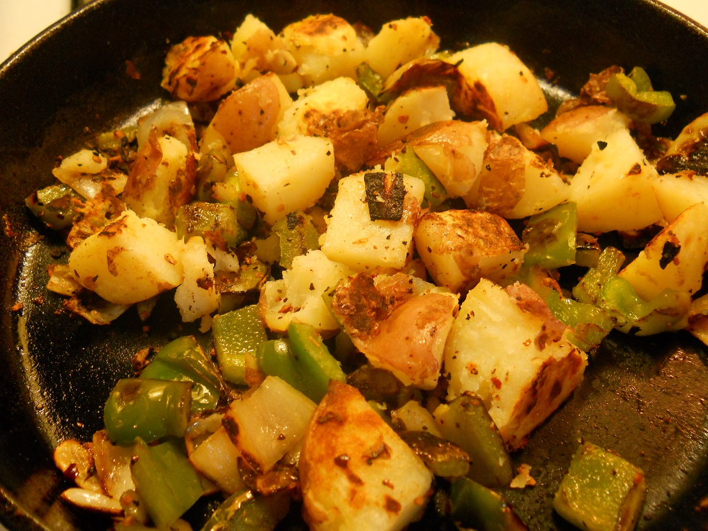

Back
Southwest Breakfast Potatoes

Ingredients:
- 8 large white potatoes, scrubbed clean
- 1/3 cup extra virgin olive oil
- 1 large yellow or Spanish onion, sliced into rings
- 1 cup mushrooms, sliced
- 4 green onions, chopped with the green and white parts separated
- 1-2 tsp. Sazon (Goya brand spice packet) or salt and pepper, to taste
- Tabasco or other hot sauce, to taste
Directions:
- Place the potatoes in a large pot, cover them with water, and bring to a boil.
- Cook until the potatoes are tender.
- Drain the potatoes, allow them to cool completely in the refrigerator, then cut them into 1/4-inch slices.
- Heat the oil in a large nonstick wok or skillet on medium-high heat.
- Add the potatoes, onion, mushrooms, the white part of the green onions, and Sazon seasoning or salt and pepper.
- Cook, tossing occasionally, until the potatoes are crisp and brown-approximately 10 minutes.